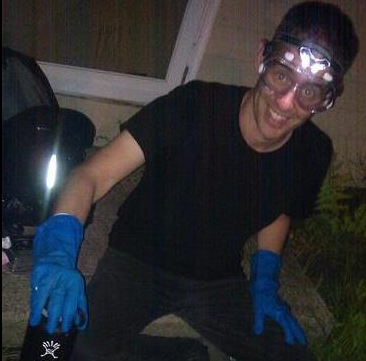

About
My name is Don Blair. I’m a graduate student in Physics at the University of Massachusetts, a Fellow at the National Center for Digital Government, a local organizer for The Public Laboratory for Open Technology and Science, and a contributor to Pioneer Valley Open Science. Other places to find me online:
- I contribute to Public Lab as “donblair”;
- I post on Pioneer Valley Open Science as “Don”;
- I’m on github as “dwblair”;
- I’m on Twitter as “donwblair”;
- I’m on Skype as “dwingateb”;
- You can email me at “donblair at pvos dot org”.
Working Docs
If we’re collaborating on a project, and we’re sharing a document online, you might very well find a link to it here.
Recent Posts
- Packing Algorithms - March 13, 2013
…or you can find more in the archives.